Introduction to Snap!
Game and Robotics Programming with Snap! and Python
Created: 2023-08-22 Tue 10:35
Introduction
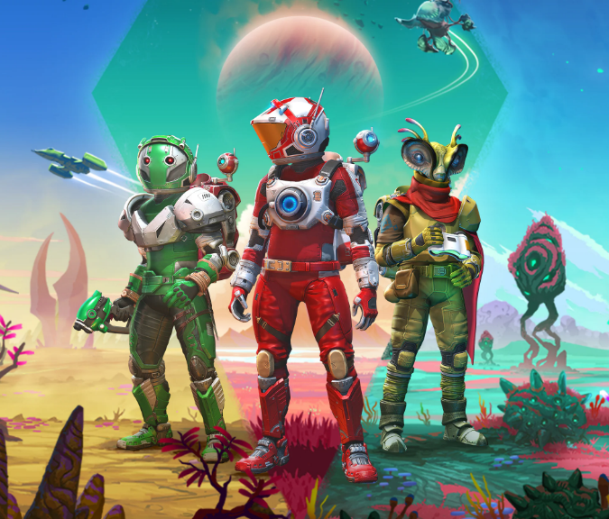
Snap! vs. Scratch
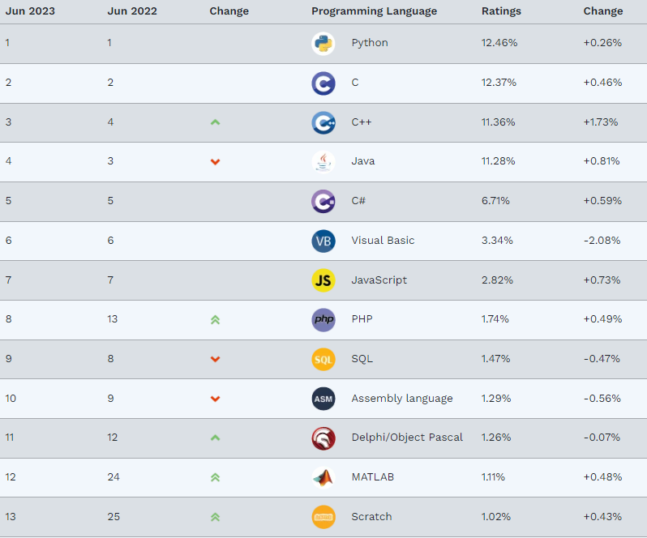
Scratch interface
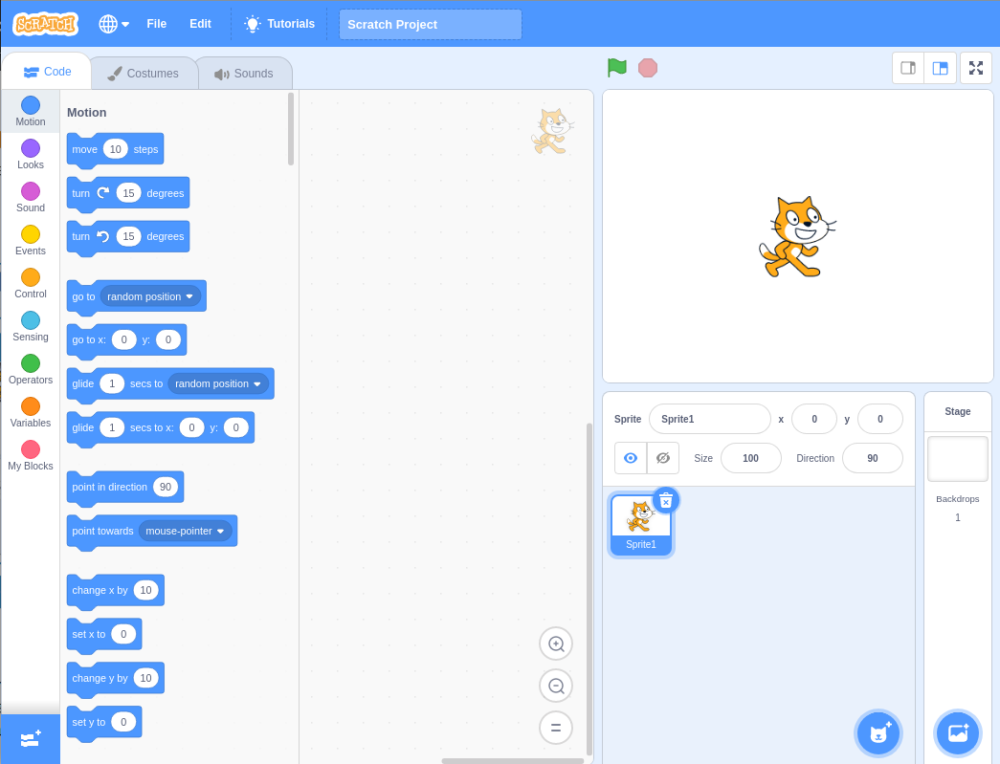
Snap! UI and examples
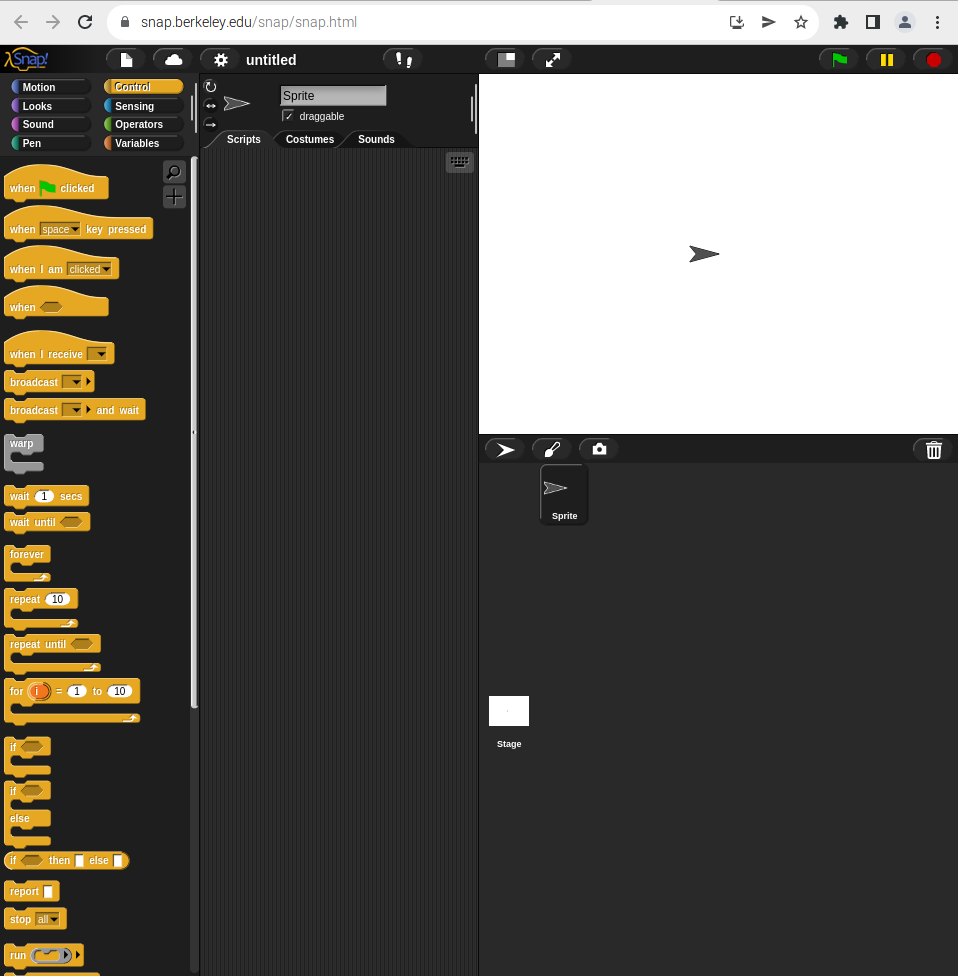
Example: Conway's Game of Life
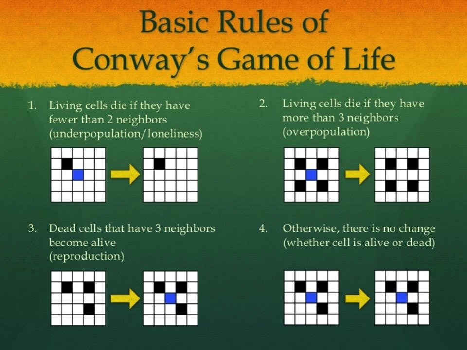
Time Machine
Programming
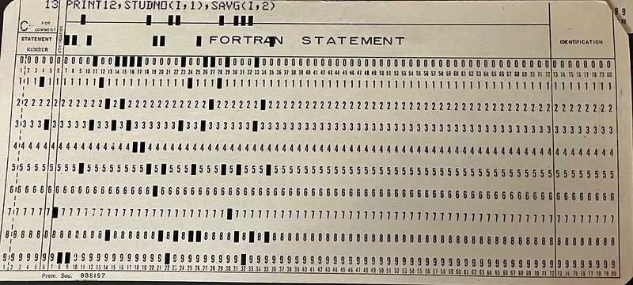
Computing vs. programming
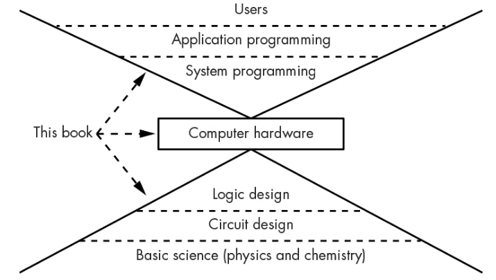
Computing vs. programming
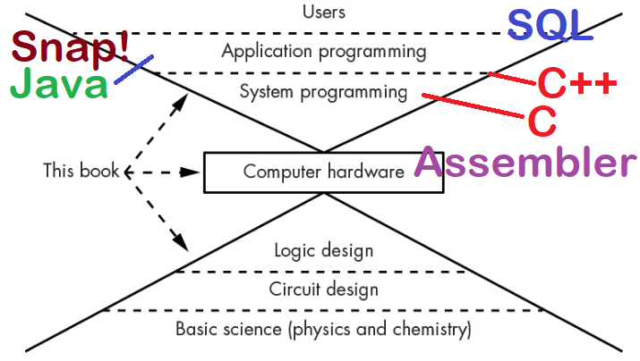
Programming languages are languages
C/C++ is like Latin

SQL is like English
Lisp is like French
R is like Italian

Snap! is like Japanese

FORTRAN is like Finnish
HTML is like Braille
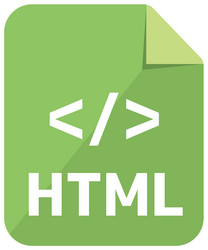
Python is like Spanish

The Importance of Infrastructure
The truth about Snap!
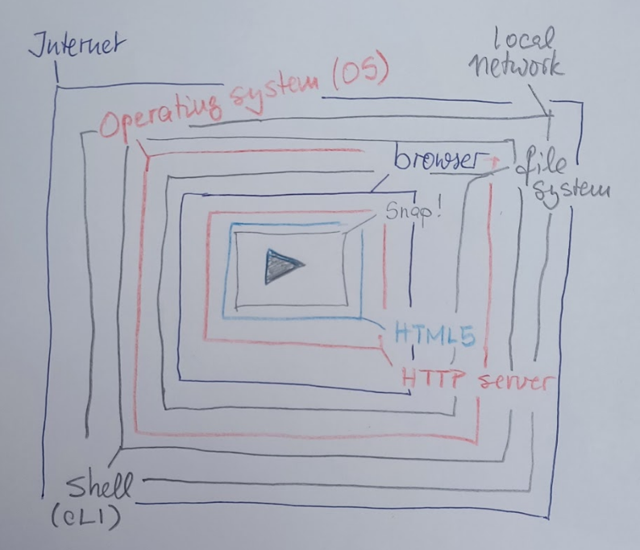
Your friend(ly) REPL
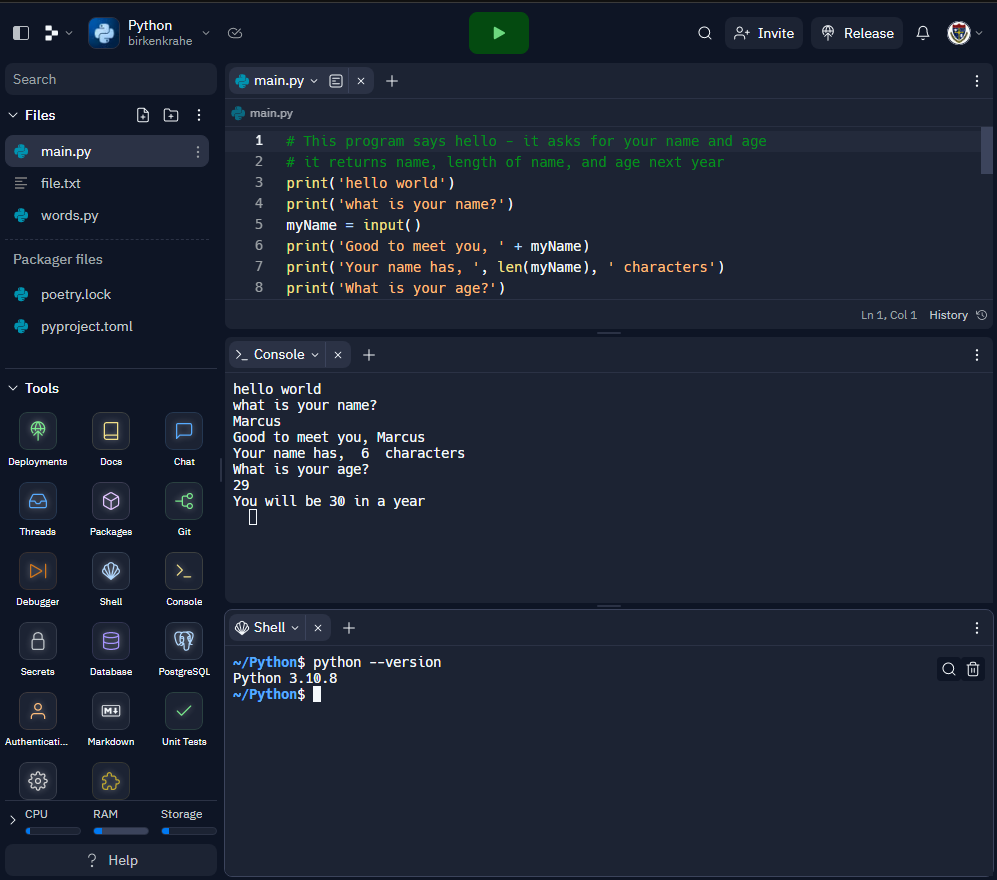
Why Snap!

Why not just Python?
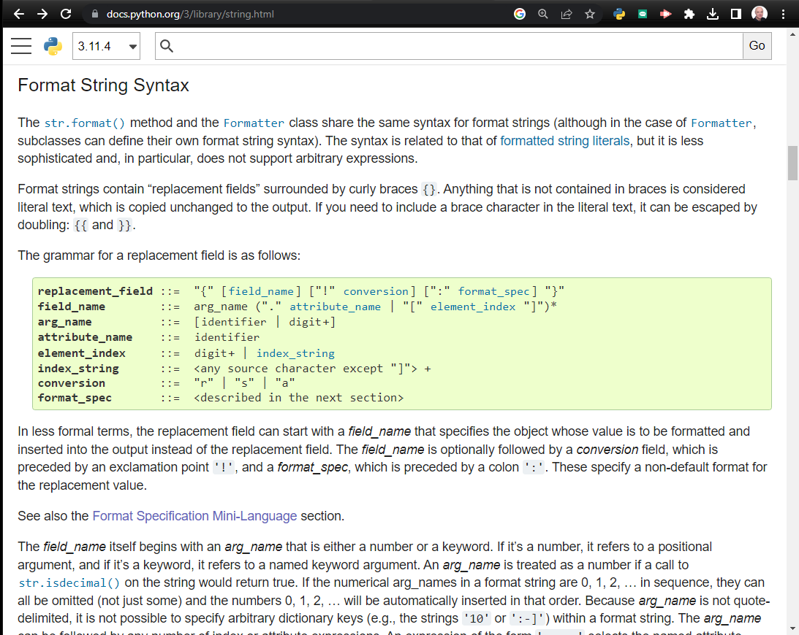
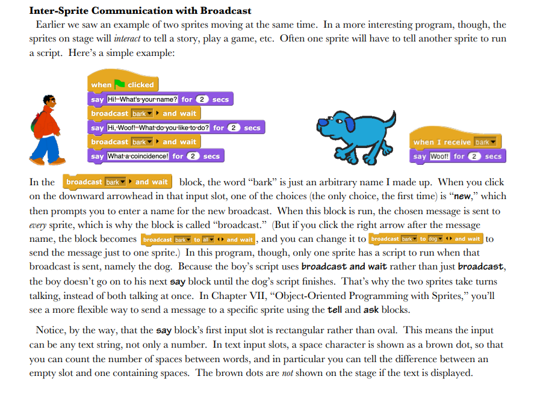
What is a User Interface?
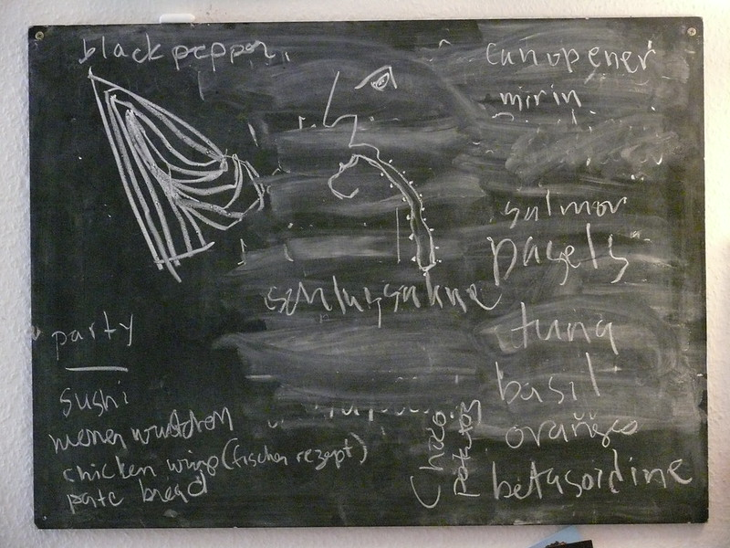
Snap! user interface
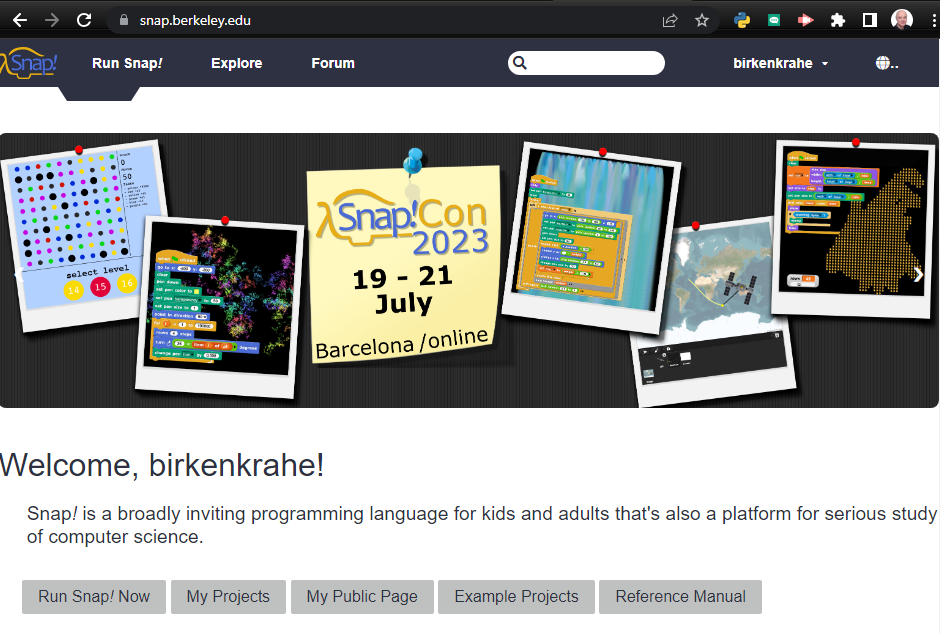
Snap interface
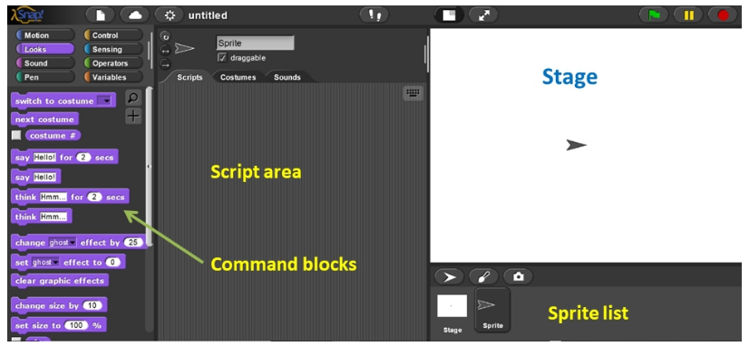
Windows Movie Maker
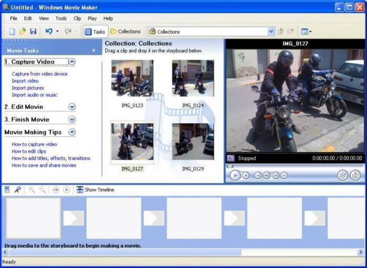
Summary
- Berkeley's Snap! is a development of MIT's Scratch, created in HTML5 (with JavaScript), available online or on your PC for download. - In Snap!, you can define multidimensional arrays and recursive functions, which means that you can do anything a high-level language like Python can do, too. - Programming can help you understand machines, your own thinking, and you can build applications for humans (like games and animations). - Programming languages are like natural languages, only much stricter. - Many layers of computing infrastructure separate you from just "getting on with it" - in Snap! you won't have to know most of them. - A user interface allows a user to interact with an application. UI/UX design is an important, growing career field.
Next: looping, broadcasting, animation
- Snap user interface (UI)
- Paint editor
- Sequence of commands
- Motion commands
- Simple looping (repeat, forever)
- Absolute motion
- Relative motion
- Smooth motion using repeat
- Nested looping
- XY geometry
- Costume-based animation